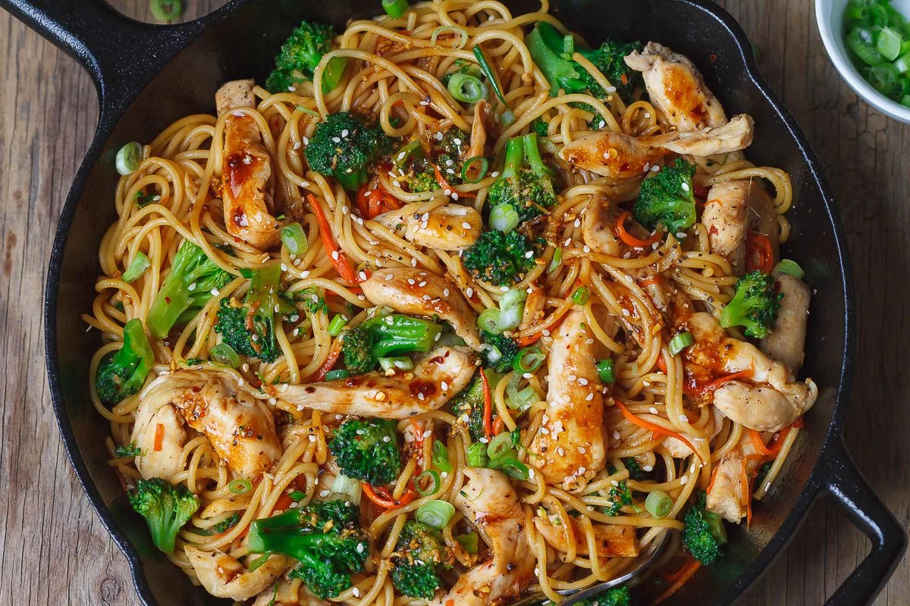

Chicken Broccoli Stirfry

Description:
This is a recipe for making chicken and broccoli stirfry.
Ingredients:
- 1 lb boneless/skinless chicken breast, cubed
- 1 tbsp olive oil
- 3 garlic cloves, minced
- 1 medium carrot, shredded
- 8 ounces of noodles of choice
- 3 cups broccoli florets
- Fresh scallion for garnish
- Sesame seeds for garnish
- Premade sauce mix
Steps:
- Boil a large pot of water, salted, and cook noodles according to package. Add broccoli florets during last 5 minutes of noodles cooking. Drain and set aside.
- Season chicken cubes to taste with salt and pepper. Add olive oil to skillet and cook chicken over medium heat, turning every 30 seconds for 2-3 minutes until slightly golden.
- Stir in garlic and carrots, cook for another minute.
- Transfer cooked noodles and broccoli to skillet. Pour sauce on top and toss until incorporated.
- Reheat all ingredients for 3 minutes, then garnish with scallion and sesame seeds.
- Ready to serve!